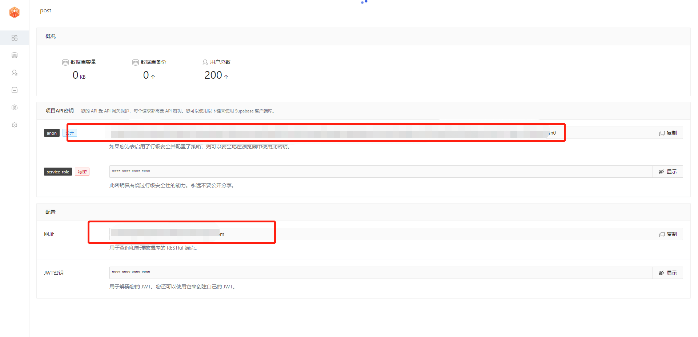
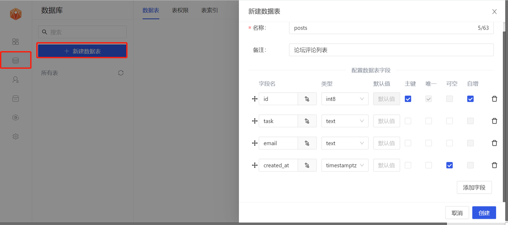
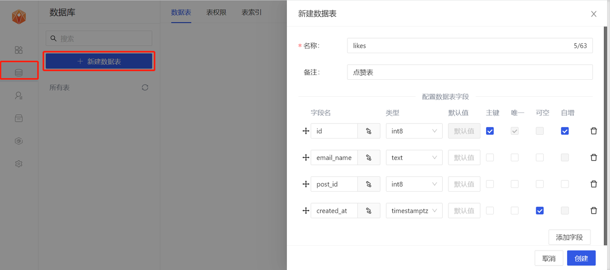
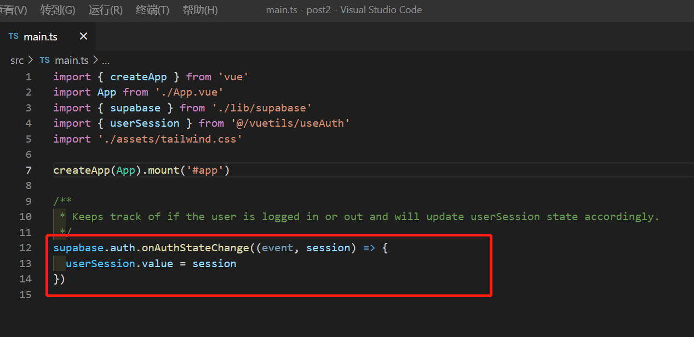
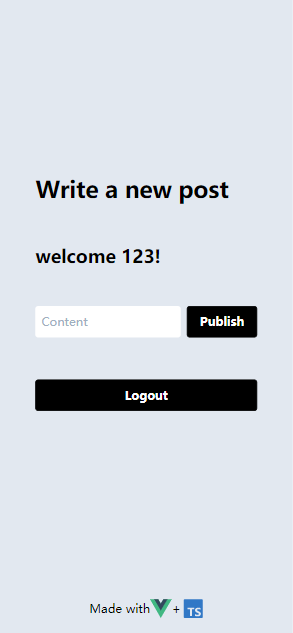
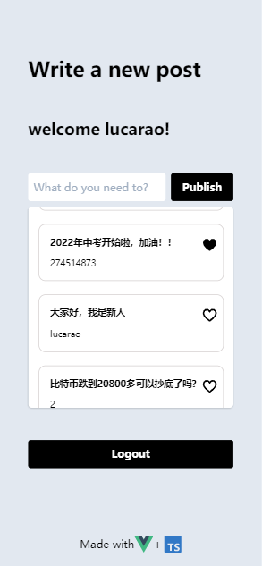

Posts社交网络论坛
MemFire Cloud是一款提供云数据库，用户可以创建云数据库，并对数据库进行管理，还可以对数据库进行备份操作。它还提供后端即服务，用户可以在1分钟内新建一个应用，使用自动生成的API和SDK，访问云数据库、对象存储、用户认证与授权等功能，可专注于编写前端应用程序代码，加速WEB或APP应用开发。
本篇文章将会教大家手把手使用MemFire Cloud做一个Posts社交网络论坛应用。我们基于Posts社交网络论坛应用做了一个详细的教程，来讲一讲在通过MemFire Cloud开发Posts社交网络论坛应用的开发步骤及注意事项，希望能真正解决用户使用MemFire Cloud过程中遇到的问题和提供一些应用实现的小技巧。
开发前需要知道的一些事
应用介绍
一个开放的社交网络论坛，任何人都可以在这里分享他们的想法和意见。
应用基础
Posts社交网络论坛是基于supabase官网的一个todo-list应用示例为基础，在这个基础上进行修改，删除，增加一些代码逻辑及功能的应用。
开发条件
您需要对vue3及ts有一定的了解；
您需要对sql语法有一定的了解；
开发依赖
“@supabase/supabase-js”: “^1.1.2”
“vue”: “^3.0.0”
“node.js”:“14.19.0”
“npm”:“6.14.16”
1.准备工作
创建应用
登录https://cloud.memfiredb.com 创建应用，打开应用后，查看并获取服务地址以及token信息
创建应用的一步很关键，我们的posts应用就是通过在这里创建的应用来获得数据库、对象存储等一系列资源，并将获得该应用专属的API访问链接和访问密钥，用户可以轻松的与以上资源进行交互。想知道关于应用更详细的内容请查看查看文档
进入应用，我们在这里可以看到，Anon public是客户端API密钥。它允许“匿名访问”您的数据库，直到用户登录。登录后，密钥将切换到用户自己的登录令牌。这将为数据启用行级安全性。
注意：service_role secret可以绕过任何安全策略完全访问您的数据。这些密钥必须保密，并且要在服务器环境中使用，决不能在客户端或浏览器上使用。
在后续示例代码中，需要提供supabaseUrl和supabaseKey。
supabaseUrl就是上图的网址链接，supabaseKey就是Anon API密钥
想知道关于应用的连接更详细的内容请查看文档
下载代码
todo-list模板代码（需要下载,选择项目为supabase /examples/vue3-ts-todo-list）：
git clone https://gitee.com/memfiredb/supabase
Posts最终代码
git clone https://github.com/LucaRao/memfire-post.git
2.修改项目名称
将项目名vue3-ts-todo-list改为Posts
3.配置访问密钥
每个Supabase项目都有一个独特的API URL。您的 API 在一个 API 网关的保护下，每次请求都需要一个 API 密钥。
将上一步中获取的anon public和网址分别设置到supabaseUrl和supabaseKey中
（1）将根目录下的.env.local.example改为.env.local
（2）supabaseUrl和supabaseKey分别赋值给VUE_APP_SUPABASE_URL和VUE_APP_SUPABASE_KEY
4.表结构初始化
接下来我们需要创建数据表，posts表是用来存储用户论坛评论的数据，likes表用来存储用户点赞的某条评论的数据。
 数据表结构：
posts（论坛评论列表）
| 名称 | 类型 | 描述 |
|---|---|---|
| id | in8 | 主键，自增，每条评论的唯一标识ID |
| task | text | 评论 |
| text | 用户名 | |
| created_at | timestamptz | 日期，可为空 |
| 名称 | 类型 | 描述 |
|---|---|---|
| id | int8 | 主键，自增，每条评论的唯一标识ID |
| email_name | text | 用户名 |
| post_id | int8 | 每条评论的唯一id |
| created_at | timestamptz | 日期，可为空 |
drop table if EXISTS public.posts;
drop table if EXISTS public.likes;
create table public.posts (
id bigint generated by default as identity primary key,
email varchar(255),
task text check (char_length(task) > 3),
created_at timestamp with time zone default timezone('utc'::text, now()) not null
);
create table public.likes (
id bigint generated by default as identity primary key,
email_name varchar(255),
post_id int not null ,
created_at timestamp with time zone default timezone('utc'::text, now()) not null
);
5.注册登录功能
运行项目
npm install
npm run serve
注册、登录、退出登录等功能在vue3-todo-list里已经实现，我们不必再次写一遍，也不需要修改文件里面的代码。
原理
打开Posts/src/compinents/Auth.vue
应用的登录、注册、退出登录的逻辑和页面在这里。登录、注册、退出登录都是通过引入的Posts/src/vuetils/useAuth.ts文件里面的相应功能的api来进行交互的，supabase官网提供的todo-list应用的demo已经在useAuth.ts文件里给我们写好了这些功能的接口。
在Posts/src/vuetils/useAuth.ts文件中看到，在引入supabase依赖之后，我们的登录、注册等功能的api都是由supabase规定熟成的api名称，比如登录叫supabase.auth.signIn，注册叫supabase.auth.signUp。具体查看文档
我们来创建一个用户并且尝试登录
控制台显示注册并登录成功，并且已经将我们的用户信息存入了userSession中
6.实现发布评论功能
（1）修改数据类型（ts语法用到数据类型校验）
打开Posts/src/types/global.ts修改为
declare interface Credentials {
email?: string | undefined
password?: string | undefined
provider?: 'bitbucket' | 'github' | 'gitlab' | 'google' | undefined
}
declare interface Todo {
id?: number
email?: string
task: string
inserted_at?: string
}
（2）编写页面逻辑
1.打开Posts/src/compinents/TodoList.vue
2.修改页面样式，用户名这里我们使用邮箱“@”符号之前的字符串。
修改template页面为
<template>
<div class="w-full">
<h2 class="mb-12 font-bold text-3xl">Write a new post</h2>
<h2 class="mb-12 font-bold text-2xl">welcome { {userSession.user.email.substring(0,userSession.user.email.indexOf('@'))} }!</h2>
<div class="flex gap-2 my-2">
<input
v-model="task"
class="rounded w-full p-2"
type="text"
placeholder="What do you need to?"
/>
<button @click="insertTask" class="btn-black">
Publish
</button>
</div>
<div class="bg-white shadow overflow-hidden rounded-md" style="height: 300px;overflow-y: scroll;">
<ul v-for="(todo, index) in allTodos" :key="index">
<suspense>
<Todo :todo="todo" />
</suspense>
</ul>
</div>
</div>
</template>
3.在该页面搜索insertTask方法，这是发布的按钮，将发布论坛评论方法的参数改为email和task
const todo = await addTodo({ email: userSession.value.user.email, task: task.value})
下图就是登录后修改的posts首页
页面引入的Posts/src/vuetils/useTodo.ts文件是用来请求posts列表数据和新增一条post相应功能交互的api的方法
打开Posts/src/vuetils/useTodo.ts文件
由于我们修改了表名称，但是逻辑并没有修改，只需要替换查询表名，所以我们将fetchTodos方法里面的查询posts列表语法修改为
const { data: todos, error } = await supabase.from('posts').select('*').order('id')
同上，我们将addTodo里面的新增post语法改为
const { data, error } = await supabase.from('posts').insert(todo).single()
现在我们在页面插入一条数据，观察控制台的network的接口请求情况，显示插入成功
7.渲染评论列表和点赞功能
打开Posts/src/components/Todo.vue页面，我们要先把页面样式做以下修改
Template
<template>
<li
class="
block
cursor-pointer
hover:bg-gray-200
focus:outline-none focus:bg-gray-200
transition
duration-150
ease-in-out
border-style1
"
>
<div class="flex items-center px-4 py-4 sm:px-6">
<div class="min-w-0 flex-1 flex items-center">
<div class="text-sm leading-5 font-medium truncate t-s">{ { todo.task } }</div>
</div>
<button @click="toggleLike" class="w-4 h-4 ml-2 hover:border-black rounded">
<svg
v-if="like"
xmlns="http://www.w3.org/2000/svg"
xmlns:xlink="http://www.w3.org/1999/xlink"
width="24px"
height="24px"
preserveAspectRatio="xMidYMid meet"
viewBox="0 0 256 256"
>
<path
d="M236.023 92c0 30.565-17.713 62.005-52.648 93.446a317.34 317.34 0 0 1-51.442 37.534a8 8 0 0 1-7.819 0c-4.25-2.38-104.09-59.117-104.09-130.98a60.02 60.02 0 0 1 108-36.04a60.02 60.02 0 0 1 108 36.04z"
fill="currentColor"
></path>
</svg>
<svg
v-else
xmlns="http://www.w3.org/2000/svg"
xmlns:xlink="http://www.w3.org/1999/xlink"
width="24px"
height="24px"
preserveAspectRatio="xMidYMid meet"
viewBox="0 0 256 256"
>
<path
d="M128.018 228a11.995 11.995 0 0 1-5.864-1.53C117.82 224.043 16.018 166.18 16.018 92a64.028 64.028 0 0 1 112-42.378a64.028 64.028 0 0 1 112 42.378c0 74.18-101.803 132.043-106.137 134.47a11.995 11.995 0 0 1-5.863 1.53zm-48-176a40.046 40.046 0 0 0-40 40c0 51.222 67.445 97.186 88 110c20.554-12.814 88-58.778 88-110a40.009 40.009 0 0 0-76.928-15.408a12 12 0 0 1-22.145 0A39.923 39.923 0 0 0 80.018 52z"
fill="currentColor"
></path>
</svg>
</button>
</div>
<div class="flex items-center px-4 py-4 sm:px-6 t-m">
{ {todo.email.substring(0, todo.email.indexOf('@'))} }
</div>
</li>
</template>
Css
<style lang="css" scoped>
.border-style1 {
border: 1px solid #d5d0d0;
margin: 20px 15px;
border-radius: 10px;
}
.t-s {
font-size: 14px;
font-weight: bold;
}
.t-m {
font-size: 13px;
font-weight: normal;
margin-top: -20px;
}
</style>
在Todo.vue列表组件中，我们需要展示所有用户的评论、用户名、当前用户是否点赞，列表的数据我们已经在TodoList.vue的fetchTodos方法中拿到，并且传递给了Todo.vue子组件。接下来我们编写点赞接口的逻辑。
刷新点赞方法：
原理：likes表里面包含所有当前用户的点赞数据，是通过当前用户的用户名email与遍历当前一条数据的post的id与likes表里面的email_name和post_id是否匹配进行查询，这是一个组件的循环遍历查询，每查一次，看是否查到数据，查到数据则表示该用户给当前的评论点了赞，即为带有当前用户点赞的数据，有的话将当前一条数据的like改为有数据即为true，爱心点亮
步骤：
1.在Todo.vue引入文件
import { defineComponent, ref } from 'vue'
import { supabase } from '@/lib/supabase'
import { userSession } from '@/vuetils/useAuth'
2.将Todo.vue逻辑代码都清空，加上下面的刷新点赞的方法
const fecthLike = async () => {
const { data } = await supabase
.from('likes')
.select('*')
.match({
post_id: props.todo.id,
email_name: userSession?.value?.user?.email || '',
})
if(data?.length){
like.value = data[0]
} else {
like.value = null
}
}
切换点赞的方法：
每次切换完都要刷新一下点赞
原理：
点赞就在likes表里添加一条用户用户名email_name和post_id的数据，取消点赞就删除此条数据
3.增加以下代码
const toggleLike = async () => {
if (like.value) {
await supabase
.from('likes')
.delete()
.match({
post_id: props.todo.id,
email_name: userSession?.value?.user?.email || '',
})
} else {
await supabase
.from('likes')
.insert({
post_id: props.todo.id,
email_name: userSession?.value?.user?.email,
})
.single()
}
fecthLike()
}
Todo.vue完整代码
<template>
<li
class="
block
cursor-pointer
hover:bg-gray-200
focus:outline-none focus:bg-gray-200
transition
duration-150
ease-in-out
border-style1
"
>
<div class="flex items-center px-4 py-4 sm:px-6">
<div class="min-w-0 flex-1 flex items-center">
<div class="text-sm leading-5 font-medium truncate t-s">{{ todo.task }}</div>
</div>
<button @click="toggleLike" class="w-4 h-4 ml-2 hover:border-black rounded">
<svg
v-if="like"
xmlns="http://www.w3.org/2000/svg"
xmlns:xlink="http://www.w3.org/1999/xlink"
width="24px"
height="24px"
preserveAspectRatio="xMidYMid meet"
viewBox="0 0 256 256"
>
<path
d="M236.023 92c0 30.565-17.713 62.005-52.648 93.446a317.34 317.34 0 0 1-51.442 37.534a8 8 0 0 1-7.819 0c-4.25-2.38-104.09-59.117-104.09-130.98a60.02 60.02 0 0 1 108-36.04a60.02 60.02 0 0 1 108 36.04z"
fill="currentColor"
></path>
</svg>
<svg
v-else
xmlns="http://www.w3.org/2000/svg"
xmlns:xlink="http://www.w3.org/1999/xlink"
width="24px"
height="24px"
preserveAspectRatio="xMidYMid meet"
viewBox="0 0 256 256"
>
<path
d="M128.018 228a11.995 11.995 0 0 1-5.864-1.53C117.82 224.043 16.018 166.18 16.018 92a64.028 64.028 0 0 1 112-42.378a64.028 64.028 0 0 1 112 42.378c0 74.18-101.803 132.043-106.137 134.47a11.995 11.995 0 0 1-5.863 1.53zm-48-176a40.046 40.046 0 0 0-40 40c0 51.222 67.445 97.186 88 110c20.554-12.814 88-58.778 88-110a40.009 40.009 0 0 0-76.928-15.408a12 12 0 0 1-22.145 0A39.923 39.923 0 0 0 80.018 52z"
fill="currentColor"
></path>
</svg>
</button>
</div>
<div class="flex items-center px-4 py-4 sm:px-6 t-m">
{ {todo.email.substring(0, todo.email.indexOf('@'))} }
</div>
</li>
</template>
<script lang="ts">
import { defineComponent, PropType, ref } from 'vue'
/* eslint-disable @typescript-eslint/camelcase */
import { supabase } from '@/lib/supabase'
import { userSession } from '@/vuetils/useAuth'
export default defineComponent({
name: 'Todo',
props: {
todo: {
type: Object,
required: true,
},
},
setup(props) {
const like = ref<undefined | null>(undefined)
const fecthLike = async () => {
const { data } = await supabase
.from('likes')
.select('*')
.match({
post_id: props.todo.id,
email_name: userSession?.value?.user?.email || '',
})
if(data?.length){
like.value = data[0]
} else {
like.value = null
}
}
fecthLike()
// Removes todo from supbase and also from app state
const toggleLike = async () => {
if (like.value) {
await supabase
.from('likes')
.delete()
.match({
post_id: props.todo.id,
email_name: userSession?.value?.user?.email || '',
})
} else {
await supabase
.from('likes')
.insert({
post_id: props.todo.id,
email_name: userSession?.value?.user?.email,
})
.single()
}
fecthLike()
}
return { toggleLike, userSession,like,fecthLike }
},
})
</script>
<style lang="css" scoped>
.border-style1 {
border: 1px solid #d5d0d0;
margin: 20px 15px;
border-radius: 10px;
}
.t-s {
font-size: 14px;
font-weight: bold;
}
.t-m {
font-size: 13px;
font-weight: normal;
margin-top: -20px;
}
</style>
小技巧：
具体的增删改查的语法可以参考文档
重启一下项目，登录后我们来新增一条数据，新增成功，点赞也成功了！
简单的post应用即完成！
写在结尾的话
以上就是基于一个教程示例对MemFire Cloud的使用和反馈的一些看法，如果在开发中遇到问题，可以参考上面的完整代码项目比对，希望对大家有所帮助。